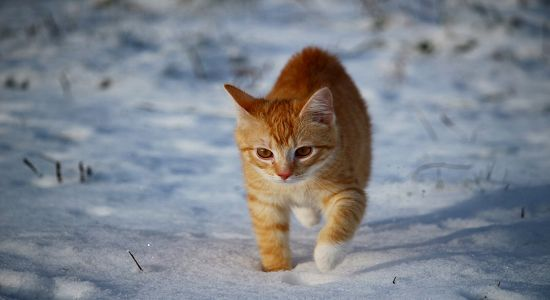
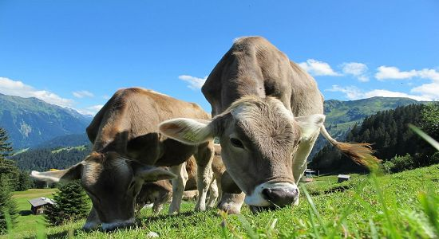
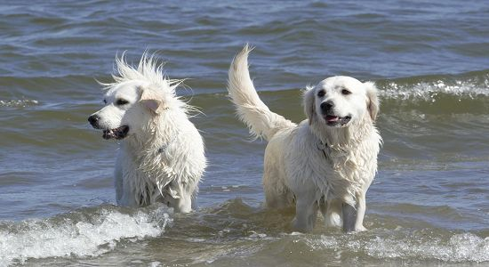
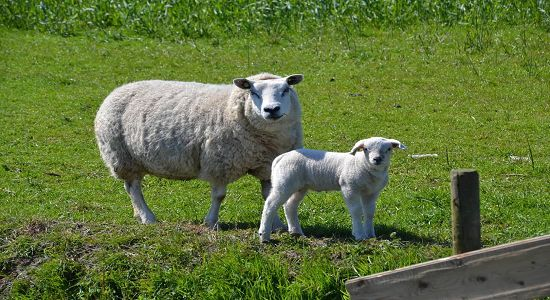

Animal List

The cat (Felis catus), also referred to as domestic cat or house cat, is a small domesticated carnivorous mammal. It is the only domesticated species of the family Felidae.
Cat

Cattle (Bos taurus) are large, domesticated, bovid ungulates widely kept as livestock. They are prominent modern members of the subfamily Bovinae and the most widespread species of the genus Bos.
Cattle

The dog (Canis familiaris or Canis lupus familiaris) is a domesticated descendant of the wolf. Also called the domestic dog, it was domesticated from an extinct population of wolves during the Late Pleistocene, over 14,000 years ago by hunter-gatherers, prior to the development of agriculture.
Dog

Sheep (pl.: sheep) or domestic sheep (Ovis aries) are a domesticated, ruminant mammal typically kept as livestock. Although the term sheep can apply to other species in the genus Ovis, in everyday usage it almost always refers to domesticated sheep.
Sheep
To be continued.